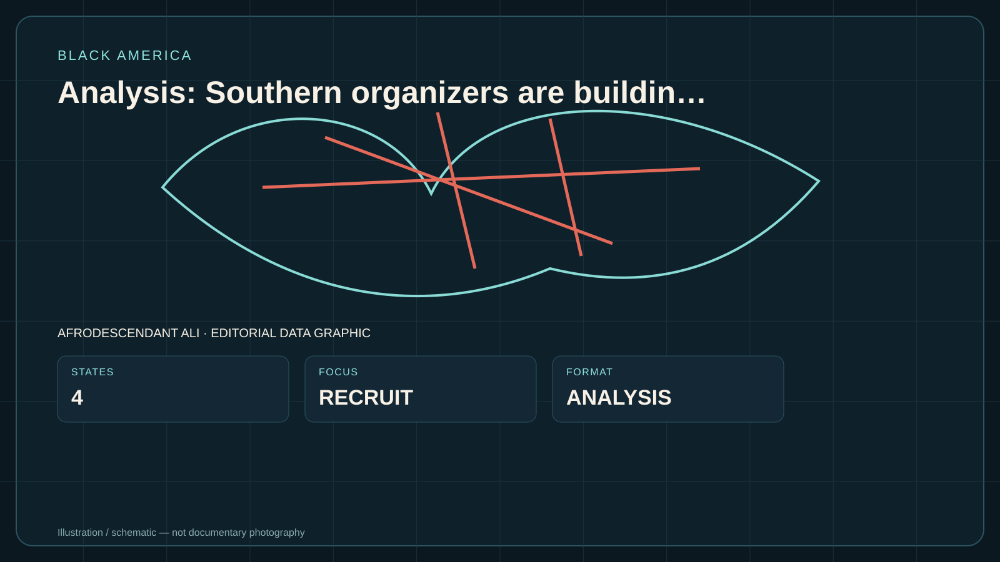

Analysis: Southern organizers are building a longer Black political bench
Across Georgia, Tennessee, South Carolina and Mississippi, organizers are trying to connect voter registration to candidate recruitment and durable local power.

This is analysis
Axios reports that Working Families Party organizers held recruitment events in Georgia, Tennessee, South Carolina and Mississippi. The organizers describe a strategy that links voter registration with identifying and supporting candidates.
The strategic shift
The argument is about infrastructure: a durable bench of local candidates and organizers may matter beyond one election cycle. That is an interpretation advanced by the organizers and reported by Axios, not a verified prediction of future victories.
Why It Matters
For Black political power, turnout and candidacy are related but different capacities. Recruitment can change who is available to contest local offices, while local institutions determine whether campaigns become durable.
What We’re Watching
Candidate recruitment, local race outcomes, organizer retention and the limits of the underlying data. The Black Census referenced in the reporting is voluntary and nonrepresentative, so it should not be treated as a population estimate.